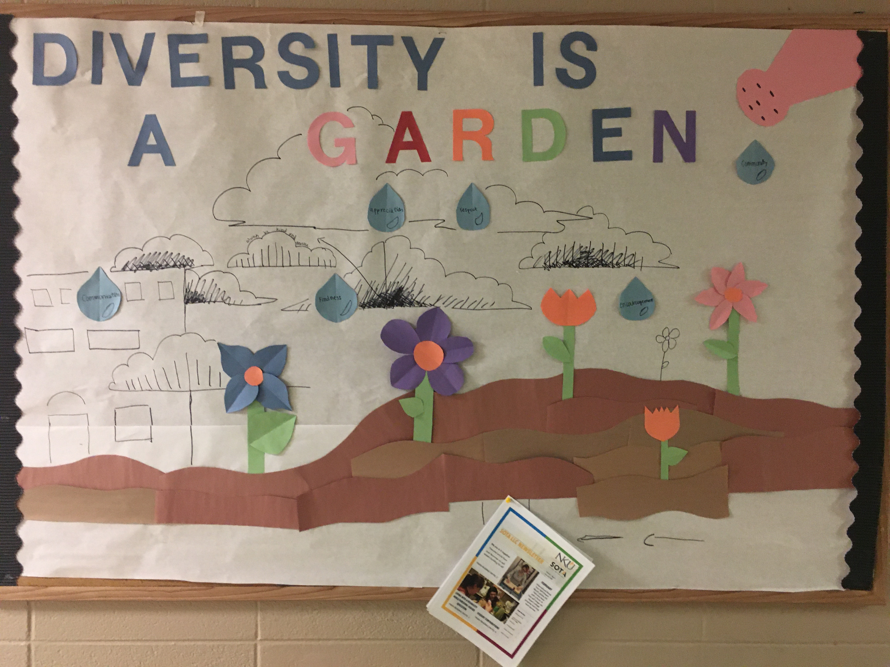
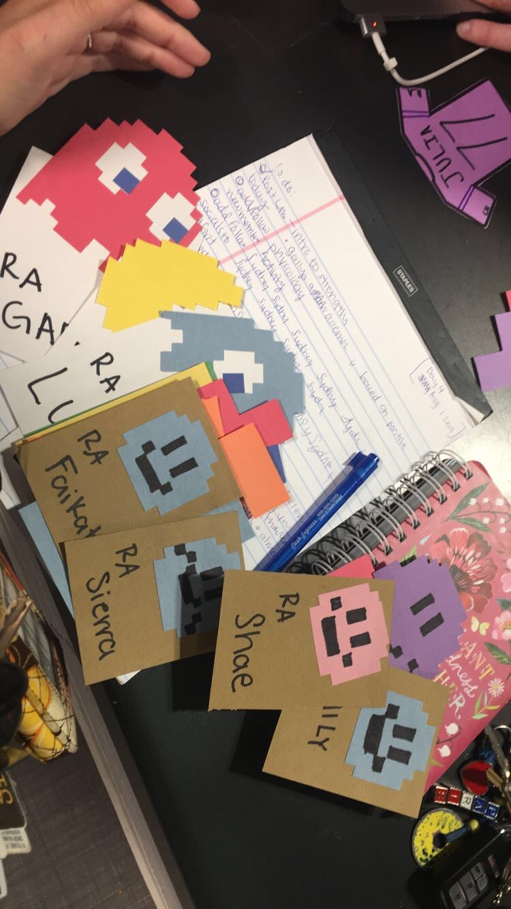
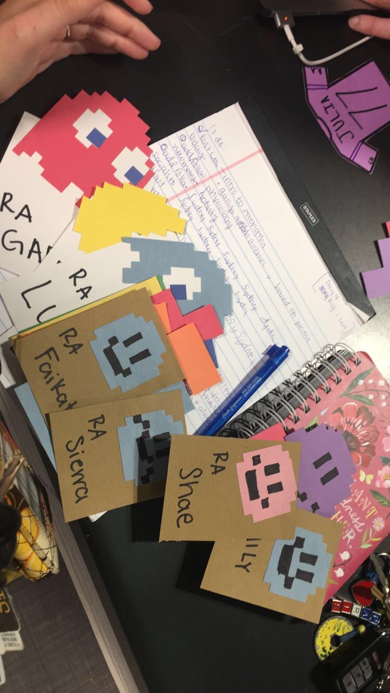

To inspire a community
My favorite moments as a RA come from interacting with residents and getting to know more about them. Earlier in January, I spent an afternoon cooking crepes with my resident Emily. We are both from Louisville so we ended up discussing the best places to eat in Louisville for over a hour! She told me about places I had never heard of. We started making a list and whenever summer comes around, we plan on visiting them together!
To be challenged
"Although it was a short time, it was my luck that I got you as RA. To be honest, I do not have much connection with the RA on the floor I am living right now. I think you are doing a great job as an RA because I know you helped me with my room change requet and also other things. I greatly appreciate your help. I think you are working greatly as an RA."
- Rojan
 
